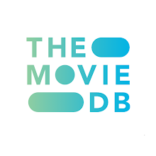

I wrangled, analyzed and visualized the tweet archive of Twitter user @dogrates also known as
WeRateDogs. WeRateDogs is a Twitter account that rates people's dogs with a humorous commaent about the dog. I wrangled WeRateDogs Twitter data to create interesting and trustworthy analyses and visualizations.
The Twitter archive is great, but it only contains very basic tweet information. I then got additional information by querying Twitter's API to gather more data.
In this project, I used python to analyze chat data in my class's WhatsApp group. From the analysis, I gained a lot of insights regarding the group including total messages sent, most active group member and more.
If you have a look at the European review statistics, it is mindblowing that telecommunication providers lose almost $65 million a month from customer churn which is way too expensive. This has also contributed to one of the biggest problems in the industry.
This project predicts churn in the telecom industry.
I created an Animated GIF Maker with streamlit. This app helps in converting videos to GIF which can in turn be made use of for instance during presentations with Google Slides or Powerpoint.
This is a part of the projects I did in the Udacity Data Analyst Nanodegree Programme. The soccer database
comes from Kaggle and is well suited for data analysis and machine learning. It contains data for soccer
matches, players, and teams from several European countries from 2008 to 2016. I explored the various datasets to discover some interesting
stuff and amazing insights regarding soccer in Europe.

This is a part of the projects I did in the Udacity Data Analyst Nanodegree Programme. The data set contains observation of about 10,000 movies collected from
the Movie Database (TMDb), including user ratings and revenue. You can find more about the dataset
here. In this project, I'm going to investigate the dataset to find out the movies with highest profits, hits and other interesting stuff about movies from the data.

As a football fan, It was always clear I'll be applying data science one way or the other to the sport.
This is my first web scraping project. It involves scraping data
including fixtures, results, goalkeeping stats and more from the Laliga stats website.
This project is the first case study of the Google Data Analytics Capstone that I did. I used data analytics to help drive informed decision making for a bike-share company seeking to maximise profits and generate more revenue.
Profits predictions with Machine Learning for an advertising company.

This hosts all of my Tableau Dashboards. They include interactive Dashboards that visualizes key insights gotten from data.
This is a popular Machine Learning competition of which I partook in; making predictions of survivability of the titanic shipwreck disaster.